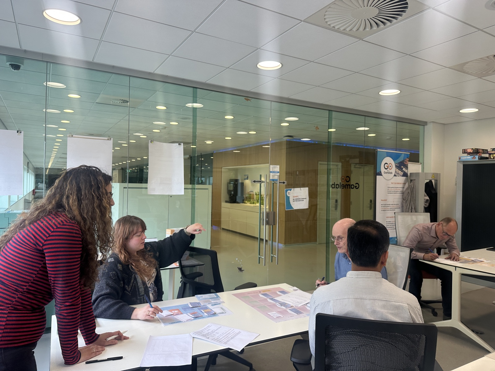

Background
This game is part of a PhD project studying how public-sector organisations actually put Responsible AI into their everyday work. We've seen, repeatedly, how things can go wrong when governments use AI, and a set of "Responsible AI" principles has emerged in response. But principles are easy to agree on and hard to practise.
The project has approached this through several methods: reviewing current empirical work on what makes Responsible AI efforts succeed or fail, followed by a year-long ethnographic study inside a Dutch inspection organisation tracing how those conditions actually show up in practice. This game is the project's third piece.
Why a game
Through those earlier studies, we learned what one team, in one place, actually did. However, it can't show you what a different team would have done facing the exact same dilemma.
A game can. It puts different teams through the same kickoff, event cards, disclosure form, and lets us watch what each one does with it. It's a safe space to see how teams handle a challenge before it happens for real.
It's also a more honest way to get people talking. Roles, turns, and a shared task produce more natural back-and-forth than a formal interview does, and less of the "performing the right answer" that can creep into conversations about ethics and compliance.
Beyond the Algorithm was built directly from what the fieldwork surfaced, a way of simulating the pressures we'd observed inside real organisations. It took about a year to develop: internal playtests, sessions with our target audience of inspectorates, and several rounds of changes, before it reached its current form.
Developing it

Where it has been played
So far sessions have been run within Dutch inspection authorities, and at festivals such as Toezichtfestival 2026 (Dutch Supervision Festival 2026).